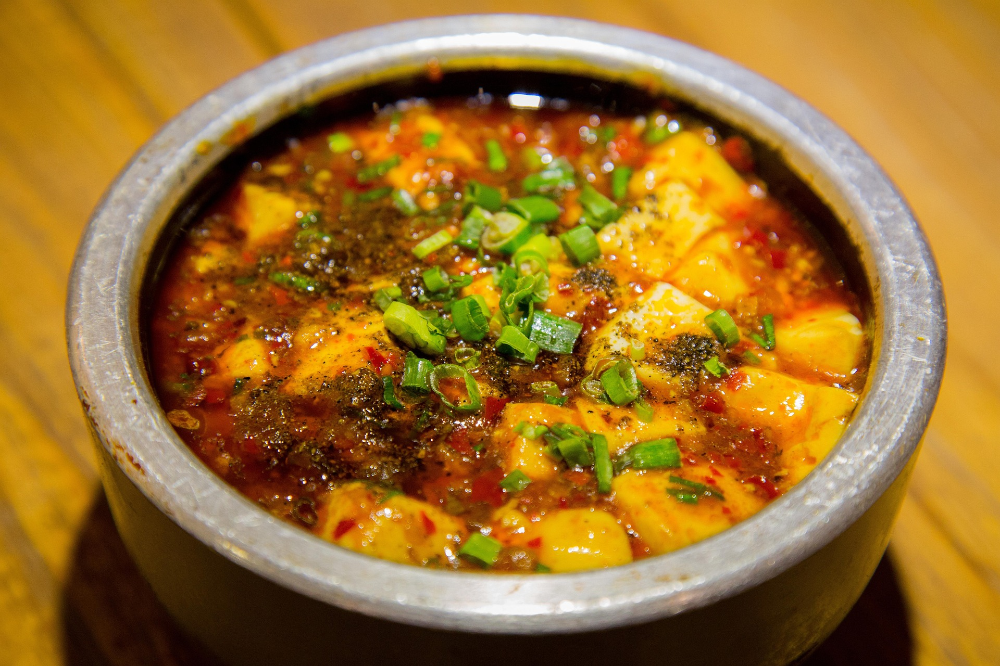

Mapo Tofu

Ingredients
- 600g tofu
- 100g pork or beef mince
- 20g canola oil
- 25g garlic
- 20g ginger
- 25g broad bean paste
- 1tsp soy sauce
- 2tsp chilli powder
- 65ml water
- 2tsp corchstarch
Steps
- Put oil in the pan and heat
- Once oil is heated, put mince in pan and cook until no longer red
- Put ground garlic, ginger, chilli powder and soy sauce in to pan and mix
- While cooking, chop your tofu up in to cubes and put them in the pan, mix well
- Add water and cornstarch in to the pan and mix until gluggy.
- Enjoy!